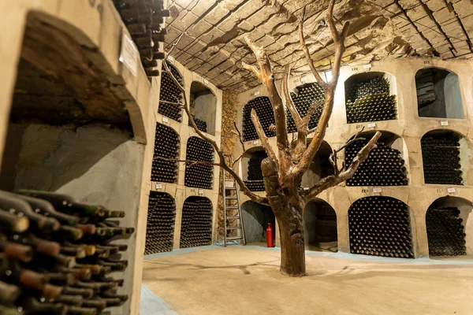

Classic Wine Tour
Discover two wineries of your choice on a full-day journey into the heart of Moldova’s wine culture. You will explore impressive underground cellars, learn about centuries-old winemaking traditions, and hear fascinating local stories from experienced guides. Each visit includes a tasting of carefully selected signature wines, offering you the chance to enjoy authentic flavors and unique aromas. Whether you choose the world-famous underground labyrinths of Cricova, the record-breaking collection of Mileștii Mici, or other renowned estates, this personalized experience will give you a deeper appreciation of Moldova’s rich winemaking heritage.
- Guided tour in underground cellars
- Tasting of 4–6 wines + traditional snacks
- Comfortable transport + local guide
- Optional: lunch at the winery
